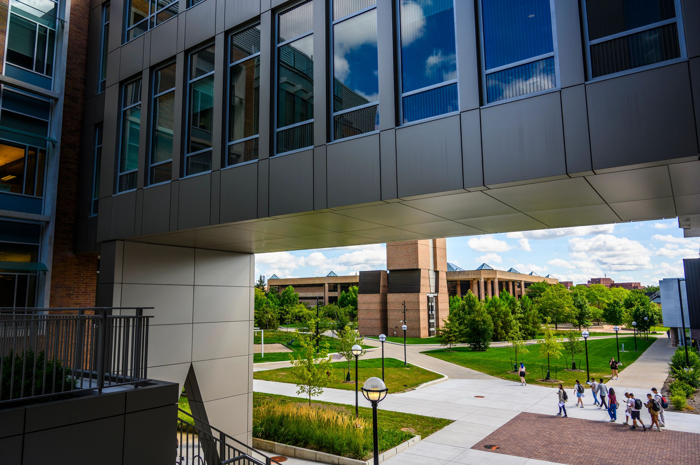

Portfolio resources
Ready to build a portfolio that gets you hired? The UMSI Career Development Resource Hub is your one-stop shop for trusted guidance, practical tools, and the latest information to help you thrive as a student and job-seeker. Whether you are just starting your exploration or getting ready to launch your career, you will find everything you need, organized for you.
FAQ
- What can UMSI Offer? : Stop searching endlessly—quickly access the resources you need for resumes, interviews, networking, mentorship, and more.
- What are your hours? : Browse by topic or question. Key areas are highlighted so you can get moving right away.
- What courses should I have taken: All resources are recommended and reviewed by the UMSI Career Development Office, so you can trust the advice and materials you find here.
- How can UMSI help? : Visit the site anytime, from any device. We’re committed to meeting the accessibility needs of all students.
- What is our approach? : We benchmark against top peer institutions and integrate UMSI’s unique support, showcasing our commitment to your success.
Start Here
Ready to build a portfolio that stands out against other applicants? The UMSI Career Development Resource Hub is your one-stop shop for trusted guidance, practical tools, and the latest information to help you thrive as a student and job-seeker. Whether you are just starting your exploration or getting ready to launch your career, you will find everything you need, organized for you.
Preparing for a Coaching Session
Career coaching is a collaborative process that empowers students with the knowledge and confidence to take the next steps in their career journey. Appointments are tailored to address your individualized career goals and the challenges you're facing.
Students play an active role throughout the process, engaging in self-reflection, asking questions, brainstorming possible solutions, and implementing the action plans co-created with your career coach. Through career coaching, coaches will challenge students, provide a safe space to try new things, and be by students’ side to celebrate their success.
Connect with the UMSI Career Development Office
The UMSI Career Development Office (CDO) offers personalized support through appointments, events, and resource guides. Visit the CDO website or find us on campus to learn more, schedule a coaching session, or just say hello.